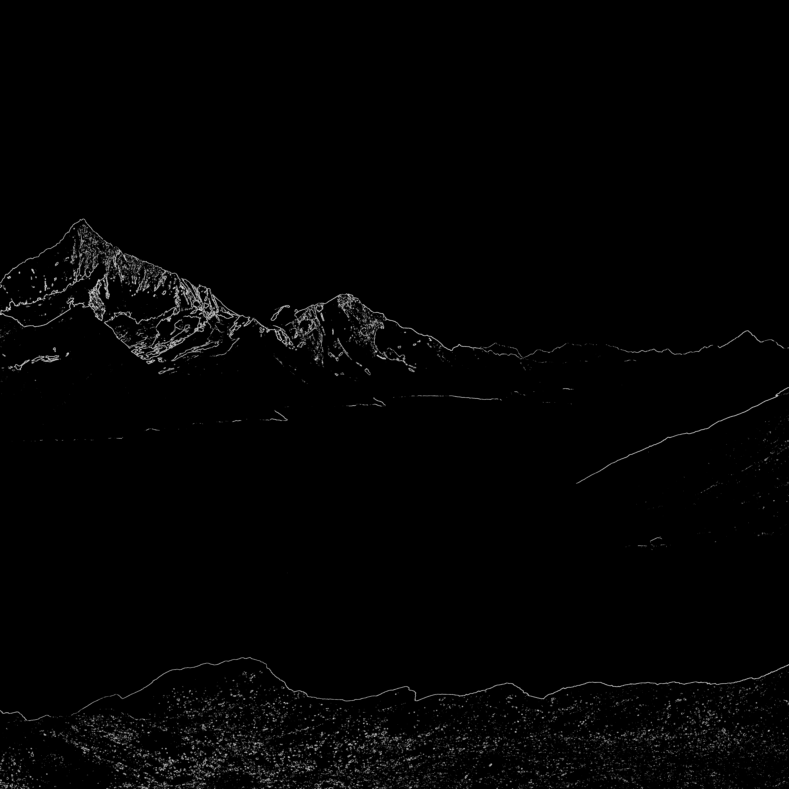

Carrera: Ingeniería en Ciencias de la Computación
Materia: Computación Paralela
Tema: Detección de Bordes (Sobel) por Bloques: Procesamiento Secuencial y Paralelo con Java Threads y JavaCV
Estudiante: Paul Sebastian Naspud Vivar
Fecha: Octubre 2026
Repositorio GitHub: https://github.com/PaulSebastian9720/Portfolio_Parallel_Computing/tree/main/02-Foto-Paralelo
El objetivo de esta práctica fue aplicar detección de bordes con el filtro Sobel sobre una imagen de alta resolución, comparando el tiempo de un procesamiento secuencial (1 hilo) contra uno paralelo con 2, 4 y 6 hilos. Se utilizó una imagen cuadrada de 6000 x 6000 píxeles descargada desde Unsplash (enlace de descarga). Todo el procesamiento de imagen se realizó con la biblioteca JavaCV (versión 1.5.10), que es el wrapper de OpenCV 4.9.0 para Java.
La solución se organizó en tres clases. La clase ImageProcessor carga la imagen con imread y la divide en una cuadrícula fija de 8 x 8 = 64 bloques de 750 x 750 píxeles (ladoBloque = 6000 / 8). Cada bloque se lee con un halo de 3 píxeles de sus vecinos (2 px que necesita el suavizado Gaussiano 5x5 y 1 px del Sobel 3x3), para que no aparezcan líneas falsas en las uniones entre bloques. Sobre cada bloque se aplica el pipeline completo de OpenCV:
cvtColor(region, gris, COLOR_BGR2GRAY); // escala de grises
GaussianBlur(gris, gris, new Size(5, 5), 0); // suavizado
Sobel(gris, gx, CV_16S, 1, 0); // cambio de intensidad horizontal
Sobel(gris, gy, CV_16S, 0, 1); // cambio de intensidad vertical
addWeighted(absX, 0.5, absY, 0.5, 0, magnitud); // combinación de Gx y Gy
threshold(magnitud, bordes, 50, 255, THRESH_BINARY); // máscara binaria de bordes
Al terminar, cada bloque descarta su halo y copia solo su núcleo a su posición dentro de la máscara final, de modo que la imagen se reconstruye directamente sin necesidad de guardar fragmentos sueltos. La imagen ensamblada se guarda con imwrite fuera de la medición de tiempo.
La clase TaskWorker extiende de Thread. Las tareas se reparten de forma cíclica (round-robin): el hilo k procesa las tareas k, k+N, k+2N, ... (N = número de hilos). En el modo secuencial se llama a run() directamente en el hilo principal; en el modo paralelo se lanzan los N hilos con start() y el programa principal los espera con join(). Como cada bloque escribe en una zona distinta de la máscara, no se necesita sincronización. Finalmente, la clase Main ejecuta las corridas, mide los tiempos y muestra la tabla comparativa.
Un detalle importante: OpenCV paraleliza internamente sus funciones. Por eso se llamó a setNumThreads(0), de forma que cada función de OpenCV se ejecute en un solo hilo y el único paralelismo medido sea el de los hilos de Java.
Las pruebas de rendimiento y mediciones de tiempo se llevaron a cabo en el siguiente entorno de hardware y software:
Para la medición se utilizó System.nanoTime(), calculando el promedio de 3 repeticiones por configuración, después de 3 corridas de calentamiento no medidas para que el compilador JIT de la JVM no afecte los resultados. Se probó con la imagen original (1 imagen de 6000 x 6000 = 64 bloques) y con un lote ampliado de 100 imágenes (100 x 64 = 6400 bloques, unos 3600 millones de píxeles en total).
Fórmula de la aceleración (Speedup):
| Conjunto de datos / Resolución | Hilos | Tiempo promedio | Aceleración (Speedup) |
|---|---|---|---|
| Original (6000 x 6000, 64 bloques) | 1 (secuencial) | 102,27 ms | 1,00 |
| Original | 2 | 70,30 ms | 1,45 |
| Original | 4 | 59,29 ms | 1,72 |
| Original | 6 | 52,06 ms | 1,96 |
| Ampliado (Lote 100x) (6400 bloques) | 1 (secuencial) | 11,48 s | 1,00 |
| Ampliado (Lote 100x) | 2 | 6,84 s | 1,68 |
| Ampliado (Lote 100x) | 4 | 6,02 s | 1,91 |
| Ampliado (Lote 100x) | 6 | 5,41 s | 2,12 |
En el lote ampliado hay 100 imágenes de 64 bloques, es decir, 6400 tareas. Cada tarea se identifica por un número, del que se obtiene la imagen y el bloque: imagen = tarea / 64 y bloque = tarea % 64. Con 6 hilos, 6400 / 6 = 1066 con residuo 4, por lo que los 4 primeros hilos procesan un bloque más. Cada hilo trabaja el equivalente a unas 16,7 imágenes completas:
| Hilo | Tareas asignadas | Bloques procesados | Equivale a (imágenes) | Tiempo del hilo |
|---|---|---|---|---|
| Hilo-1 | 0, 6, 12, 18, ... | 1067 | 16,67 | 5,11 s |
| Hilo-2 | 1, 7, 13, 19, ... | 1067 | 16,67 | 5,41 s |
| Hilo-3 | 2, 8, 14, 20, ... | 1067 | 16,67 | 5,29 s |
| Hilo-4 | 3, 9, 15, 21, ... | 1067 | 16,67 | 5,24 s |
| Hilo-5 | 4, 10, 16, 22, ... | 1066 | 16,66 | 5,16 s |
| Hilo-6 | 5, 11, 17, 23, ... | 1066 | 16,66 | 5,30 s |
Por ejemplo, la tarea 70 la procesa el Hilo-5 (70 % 6 = 4) y corresponde a la imagen 2, bloque 6 (70 / 64 = 1, 70 % 64 = 6). Los tiempos de los 6 hilos son muy parecidos (entre 5,1 y 5,4 segundos), lo que muestra que el reparto cíclico equilibra bien la carga. Así se muestra en la consola:
▶ PARALELO (6 hilos)
------------------------------------------------
Hilo | Bloques | Tiempo (ms)
------------------------------------------------
Hilo-1 | 1067 | 5105,00
Hilo-2 | 1067 | 5411,63
Hilo-3 | 1067 | 5294,63
Hilo-4 | 1067 | 5242,36
Hilo-5 | 1066 | 5155,02
Hilo-6 | 1066 | 5301,58
------------------------------------------------
Bloques: 6400 | min 1,76 ms | prom 4,92 ms | max 21,51 ms
Promedio: 5409,18 ms
La salida no presenta cortes ni líneas en las uniones de los bloques gracias al uso del halo, y es idéntica sin importar el número de hilos utilizado.
La versión paralela siempre fue más rápida. En la imagen original el tiempo bajó de 102,27 ms a 52,06 ms con 6 hilos, y en el lote ampliado pasó de 11,48 s a 5,41 s, reduciendo el tiempo a menos de la mitad.
Al pasar de 1 a 2 hilos se obtiene la mayor mejora (1,68x en el ampliado), pero de 2 a 4 y de 4 a 6 la ganancia es cada vez menor. La causa es que OpenCV procesa cada bloque muy rápido (alrededor de 2 ms), por lo que el límite deja de ser la CPU y pasa a ser el ancho de banda de la memoria RAM: todos los hilos compiten por leer la imagen y escribir la máscara. Esto se ve en que el tiempo promedio por bloque sube de 2,00 ms con 1 hilo a 4,92 ms con 6 hilos. Además, el procesador tiene solo 4 núcleos físicos, así que con 6 hilos dos de ellos comparten núcleo mediante Hyper-Threading.
Con el lote de 100 imágenes el tiempo secuencial crece de forma proporcional (unas 112 veces el de una sola imagen) y el speedup mejora en todas las configuraciones (por ejemplo, de 1,72 a 1,91 con 4 hilos). Con más trabajo, el costo fijo de crear y sincronizar los hilos se vuelve despreciable frente al tiempo de procesamiento útil.
No. Crear los hilos con start() y esperarlos con join() tiene un costo fijo; si la imagen fuera pequeña, ese costo podría superar el tiempo de procesarla de forma secuencial. Además, como se observó, cuando la tarea está limitada por la memoria, agregar más hilos deja de aportar porque todos compiten por el mismo recurso.
extends Thread con start() y join() controló el paralelismo de forma simple y sin bloqueos, ya que cada bloque escribe en una zona distinta de la imagen.